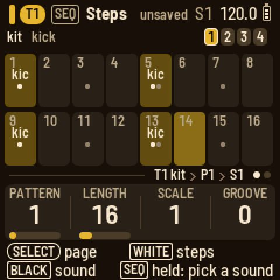
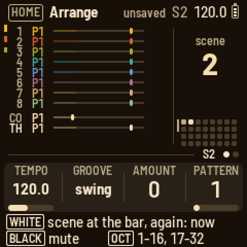
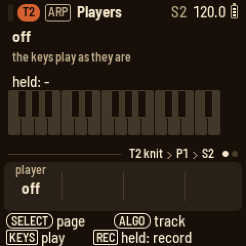

LOOM-8
A pocket groovebox for the M-VAVE FM-1. Eight tracks, each in its own colour, on six synth engines, a sample player, a break slicer and a drum kit; a 64-step sequencer with tricks and parameter locks; and weave, which crosses two patterns into a third.



Version 0.12.1. It installs and
uninstalls the way every fm1-base firmware does, and the installer can put M-VAVE's own firmware back. Installing is at your own risk.
What's in it
- Eight tracks, each with eight patterns of up to 64 steps: knit (the everyday subtractive voice, with a supersaw unison), rayon (two-operator FM), jacquard (wavetables), bellows (an organ), cane and voile (physical models and voices from Mutable Instruments Braids) and acid (a TB-303 bass line, with accent and slide) synths; sample and slice, which play the sample bank and chop breaks; the kit, eleven drum voices on the black keys; or midi, which plays another synth over USB or Bluetooth, eight knobs sending its CCs. 93 factory presets, and 16 of your own.
- Tricks on any step: pulse, hold, multiply, ramps, bends, jumps, skips and more; locks for any knob on any step.
- Weave a pattern with a copied one: bars or steps in turn, or one's rhythm playing the other's notes.
- Players: arp, strum (one key plays a recorded chord) and hold.
- The conductor moves the tracks that follow it through a key, a scale and a progression.
- Throws: twelve momentary effects a hand, held from the keys, and recorded if you like.
- Two send effects (the reverb with the PlayStation's own reverbs among its modes), a mixer with EQ and a compressor on the master, thirty-two scenes and a song.
- A screen reader: the FM-1 says its screen through FM-1 Screen Reader.
To go back to the official firmware, use the installer's "Back to the stock firmware", or M-VAVE's updater, M-UPGRADE, from m-vave.com/download. LOOM-8's way of working owes a great deal to teenage engineering's OP-XY. M-VAVE, FM-1 and OP-XY are trademarks of their owners; LOOM-8 is not affiliated with any of them.